За свідченнями археологів, поселення на території сучасного Запоріжжя відомі з часів
Середньостогівської
культури[1]
. За часів Київської Русі на території сучасного міста були переправи через Дніпро.
1103 року
в районі острова Хортиця руські князі
Святополк Ізяславич і Володимир Мономах
завдали нищівної
поразки
половцям.[2]
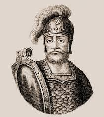
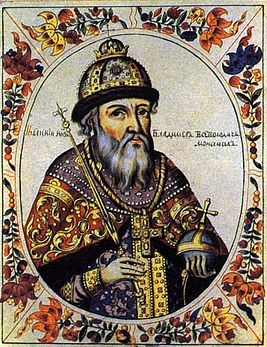
У XV—XVII століттях
територія сучасного міста входила до Запорожжя — краю вольностей запорозьких
козаків.
Першою і єдиною Січчю, розташованою безпосередньо в межах сучасного міста, була
Хортицька, яку
у 1552 року заснував український шляхтич Дмитро Вишневецький (Байда) на острові
Мала Хортиця.
28 серпня 1770 року
на місці сучасного Запоріжжя закладено
Олександрівську
фортецю[3]
як військовий об'єкт.
Її будівництво завершилося у
1775 році.
Того ж року, за ініціативою
Григорія Потьомкіна,
було знищено
останню Запорозьку Січ.
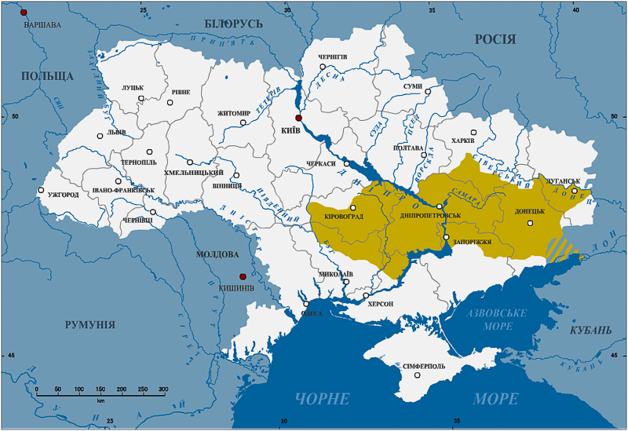
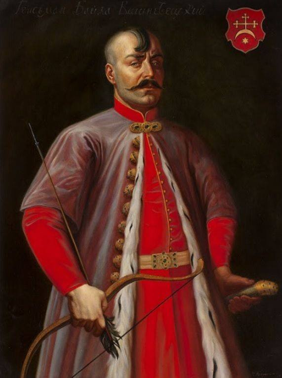
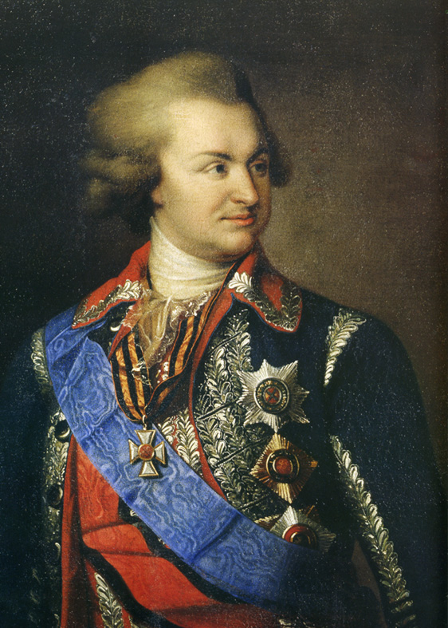
1873 року,
завдяки будівництву залізниці, місто поступово перетворилося на важливий транспортний вузол,
де вантажі перевантажувалися із залізниці на річковий транспорт, що прямував до Одеси.
До 15 березня 1921 року
місто називалося
Олександрівськ за назвою Олександрівської фортеці князя
Олександра Вяземського.
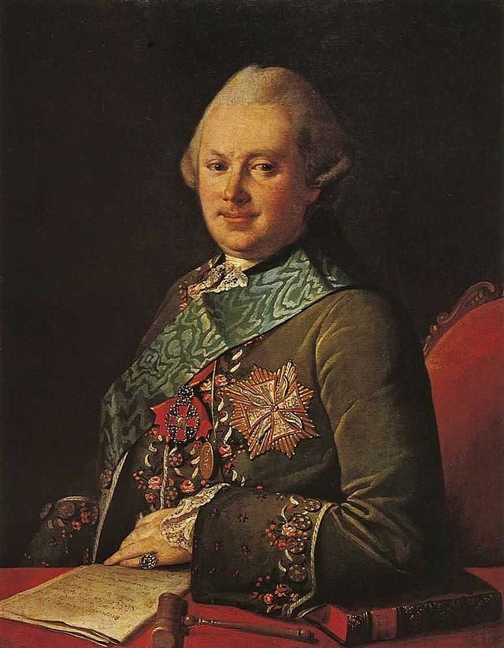
В Березні 1921 року
Олександрівська губернія отримала назву Запорізька губернія. Згодом Запорізьким
губернським виконавчим комітетом виданий наказ про перейменування міста Олександрівська в Запоріжжя —
тобто розташоване за Дніпровими порогами.
Нова назва й раніше була відомою серед населення та
враховувала історичні традиції краю — міста за порогами, до спорудження
y 1932 році
греблі Дніпровської
ГЕС в місці, де річка Дніпро перетинає скелястий південний край
Українського щита,[4]
закінчувалися
численні Дніпрові пороги, що перешкоджали судноплавству.
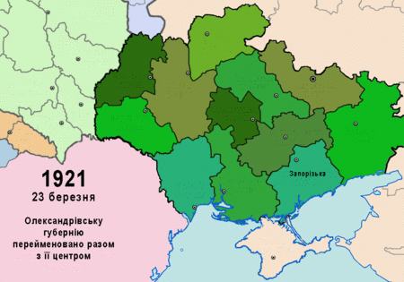
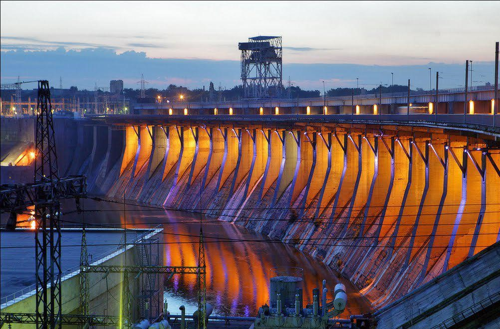
Під час Другої світової війни Запоріжжя стало ареною важливих військових подій.
У серпні 1941 року,
коли
німецькі війська наблизилися до міста, радянські війська підірвали греблю Дніпрогесу, щоб уповільнити
їхній наступ.Це призвело до значних руйнувань та жертв серед цивільного
населення.
Містобуло окуповане німецькими військами
до жовтня 1943 року,
коли в ході
Запорізької наступальної
операції[5]
радянські війська звільнили його. Після визволення в місті залишалося лише 61 тисяча мешканців
замість довоєнних 395 тисяч.
Також під час Другої світової війни Запоріжжя було найбільш відвідуване
Адольфом Гітлером, який неодноразово навідувався до штаб-квартири фон Манштейна
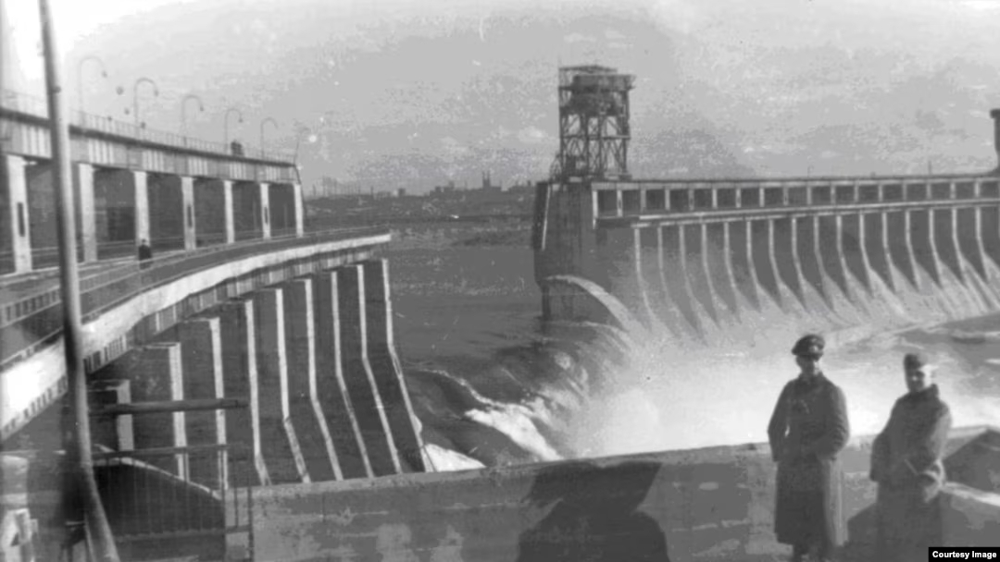
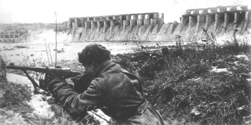
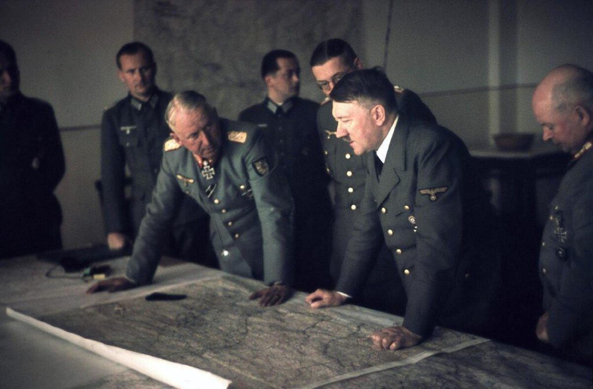
З проголошенням незалежності України
в 1991 році
Запоріжжя стало одним із провідних індустріальних
центрів країни. Місто зіткнулося з економічними труднощами, зокрема
гіперінфляцією[6]
та знеціненням
карбованця, що вплинуло на рівень життя населення. Проте, завдяки розвитку промисловості
та інфраструктури, Запоріжжя поступово відновлювалося.
У 2017 році
місто посіло 15-те місце в рейтингу
комфортності міст України, враховуючи такі критерії, як економічний стан, безпека,
інфраструктура та
екологія.[7]
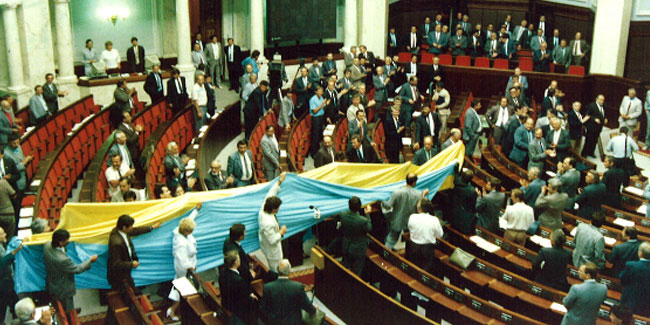
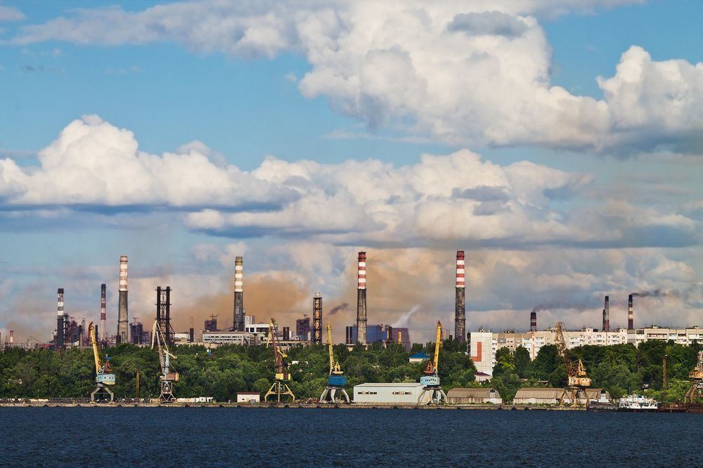
ТЕРМІНИ:
Середньостогівська культура -
археологічна культура доби енеоліту степової й лісостепової України
Половці -
кочові племена тюркського та скіфо-сарматського походження, які у XI опанували
українське
Причорномор'я, витіснивши печенігів, хозарів та ясів
Олександрівська фортеця -
фортеця Дніпровської лінії, закладена у серпні 1770 року, була досить потужним
укріпленим пунктом
Український щит -
багатоярусна тектонічна плитащо простягається в межах України вздовж середньої течії
Дніпра смугою довжиною понад 1000 км і шириною близько 250 км.
Запорізька наступальна операція -
наступальна операція радянських військ у ході німецько-радянської
війни, що проводилася силами двох фронтів у ході Битви за Дніпро з метою ліквідації запорізького
плацдарму німців і визволення міста Запоріжжя
Гіперінфляція -
інфляція, що вийшла з-під контролю, ситуація, коли ціни стрімко зростають разом зі
швидким знеціненням грошової одиниці
Інфраструктура -
сукупність споруд, будівель, систем і служб, необхідних для функціонування галузей
матеріального виробництва та забезпечення умов життєдіяльності суспільства.
Екологія -
наука, яка вивчає взаємодії рослин, тварин, грибів, мікроорганізмів і вірусів між
собою та з
довкіллям